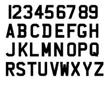
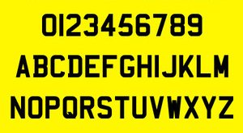
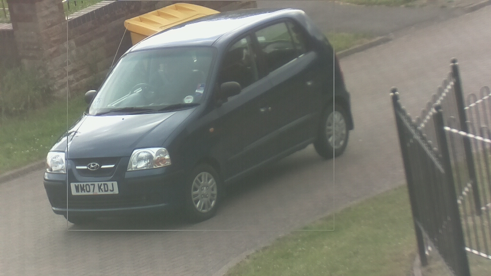
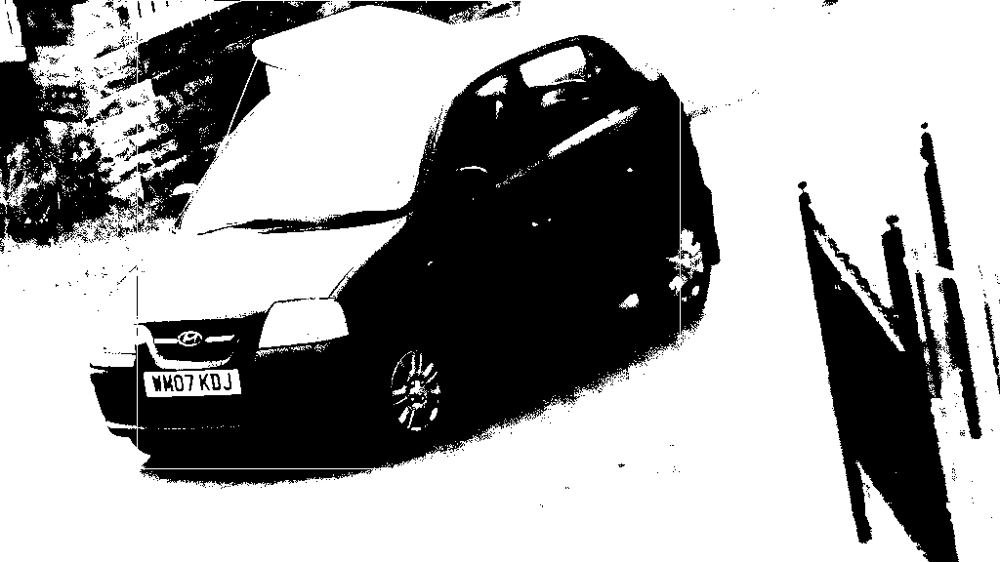

xwMOOC 라즈베리 파이
광학 문자 판독기 – (Optical Character Reader, OCR)
학습 목표
- 라즈베리파이를 광학문자 판독기로 변환한다.
1. 광학문자 판독기 1
Tesseract는 최초 HP 연구소에서 1985년과 1994년 사이 개발되었고, 1996년 윈도우 포팅을 위해서 일부 수정이 되었고, 1998년 C++로 일부 수정을 했다.
2005년 Tesseract가 HP에 의해 오픈소스화 되었고, 그 이후 구글에서 주도적으로 개발되고 있다. 라이선스는 아파치2.0을 따르고 있다.
2. 설치
tesseract-ocr은 광학문자 판독기고, imagemagick은 200개 이상의 다양한 이미지를 읽고 간단한 조작을 하는데 최상의 이미지 소프트웨어다.
$ sudo apt-get -s install tesseract-ocr imagemagick3. OCR 예행연습
인식할 문자에 명암(contrast)이 좋은 경우 tesseract 인식율은 좋다.
|  |  |
$ wget http://wiki.raspberrytorte.com/images/f/f9/Numberplate_UK_front.JPG
$ wget http://wiki.raspberrytorte.com/images/0/0d/Numberplate_UK_rear2.JPG
$ tesseract numberplate_UK_front.JPG rpi-numberplate_UK_front
$ cat rpi-numberplate_UK_front.txt|23456789
ABCDEFGH
JKLMNDPIJ
RSTUVHXYZ$ tesseract numberplate_UK_rear.JPG rpi-numberplate_UK_rear
$ cat rpi-numberplate_UK_rear.txt|23456789
ABCDEFGH
JKLMNDPIJ
RSTUVHXYZ기본적인 훈련만으로 tesseract 문자인식 소프트웨어 성능이 이 정도 나오는 것은 나쁜 것은 아니다.
4. 라즈베리파이 OCR 사례
라즈베리파이에 장착된 파이캠으로 사진을 칼라로 찍어 이를 흑백 이미지로 변환하고 나서, tesseract 광학문자판독기에 넣어 문자를 인식하는 과정을 실습한다.
- 파이캠으로 사진을 찍거나 웹페이지 사진을 가져온다. 사진은 칼라사진이다.
- 흑백 이미지로 변환하는데 임계값을 설정하여
convert변환한다. tesseract광학문자 인식기에 넣어 결과를 도출한다.- 문자인식률을 검토한다.
예를 들어, raspistill -o image.jpg 명령어로 파이캠으로 사진을 찍어 image.jpg로 저장하고, 이를 convert 명령어로 imagebw.jpg 흑백이미지로 변환하고 나서, 이를 tesseract에 넣어 문자를 추출하여 imagebw.txt 파일에 저장한다.
$ raspistill -o image.jpg | convert image.jpg -threshold 20% imagebw.jpg | tesseract imagebw.jpg imagebw | cat imagebw.txt4.1. 이미지에서 문자 추출 작업흐름
이미지에서 문자를 뽑아내는 과정은 생각만큼 간단하지는 않는다. 즉, 이미지를 넣어주고, tesseract 에 넣어주면 문자가 뽑히지는 않는다. 경우에 따라서는 잘 뽑혀지지만, 그렇지 않는 경우가 더 많다.
|  |  |
자동차 번호판을 인식하기 위해서, 칼라 원본이미지를 흑백으로 변환한 두에도 문자가 추출되지 않아, 인식할 자동차 번호판을 먼저 식별하고 나서, 번호판을 잘라내고 나서, 잘라낸 이미지를 tesseract로 보내 문자추출을 하여 자동차 번호판을 인식하는 과정을 거친다.
$ tesseract 04-20130623173123-00.jpg 04-20130623173123-00
$ convert 04-20130623173123-00bw.jpg -threshold 20% 04-20130623173123-00bw.jpg
$ tesseract 04-20130623173123-00bw.jpg 04-20130623173123-00bw
$ cat 04-20130623173123-00bw.txt
$ tesseract 04-20130623173123-00bwcut.jpg 04-20130623173123-00bwcut
$ cat 04-20130623173123-00bwcut.txt
um Km}4.2. 인터넷 이미지에서 문자 추출 사례
$ wget http://www.mattmahoney.net/ocr/stock_gs200.jpg
$ convert stock_gs200.jpg -threshold 70% stock_gs200bw.jpg
$ tesseract stock_gs200bw.jpg stock_gs200bw
$ cat stock_gs200bw.txtNasdag82AMEX
Stocksinboldmscorfellsxormare
.; USA Track your invesmwnts with our continuously
Iouqy updated stocks. Vlsit us on the web at
~‘°'“ mnney.usatoday.mm인터넷에서 이미지를 받아 작업흐름에 맞춰 넣어 처음이지만, 결과가 나쁘지는 않다. 하지만, 개선의 여지도 많아 보인다.